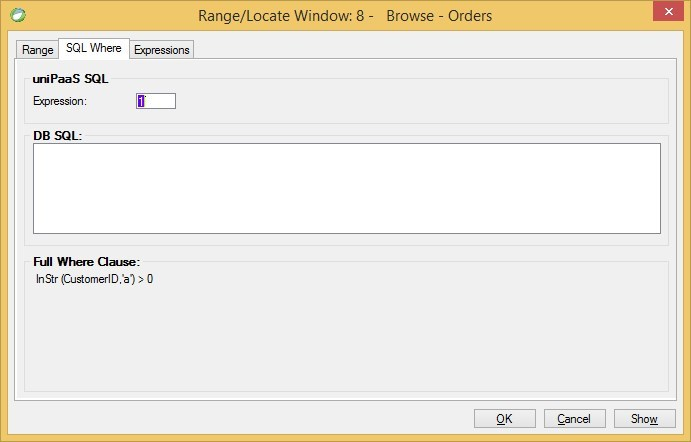

SQL Where
Name in Migrated Code: Where.Add
Location in Migrated Code: InitializeDataView

SQL Where Expression
The SQL Where expression allowed the developer to add a uniPaaS expression that will be translated to the corresponding SQL Where statement.
Same is done in the migrated code - all the functions supporting this behavior reside not in the ENV.UserMethods class but rather in the ENV.Data.UserDbMethods, resulting in a slight difference in the Where.Add
So in the following example the expression is InStr(CustomerID,'a')>0 - note the "db" prefix to the function (method):
void InitializeDataView()
{
From = Orders;
Where.Add("{0} > 0", db.InStr(Orders.CustomerID, "a"));
} Help us improve, Edit this page on GitHub
or email us at info@fireflymigration.com